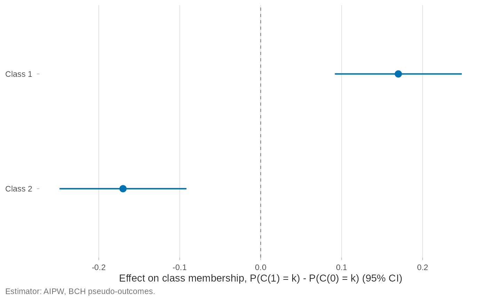
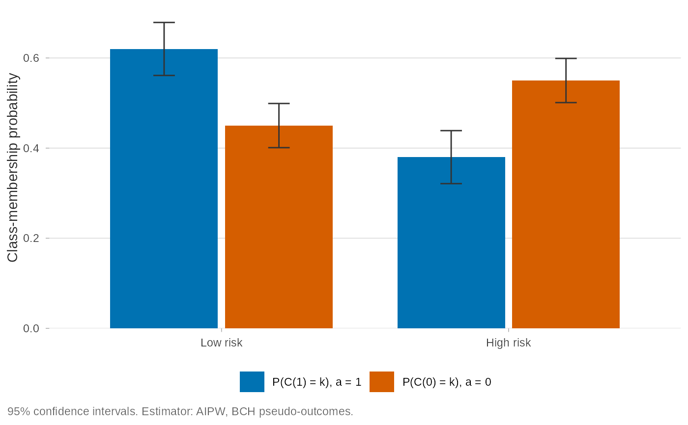
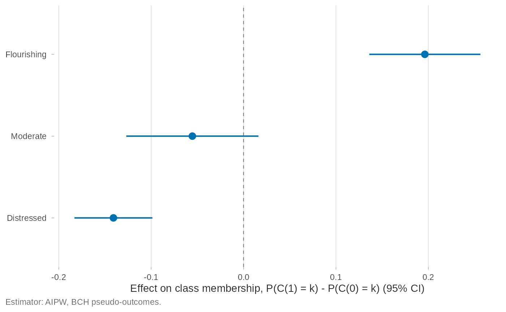
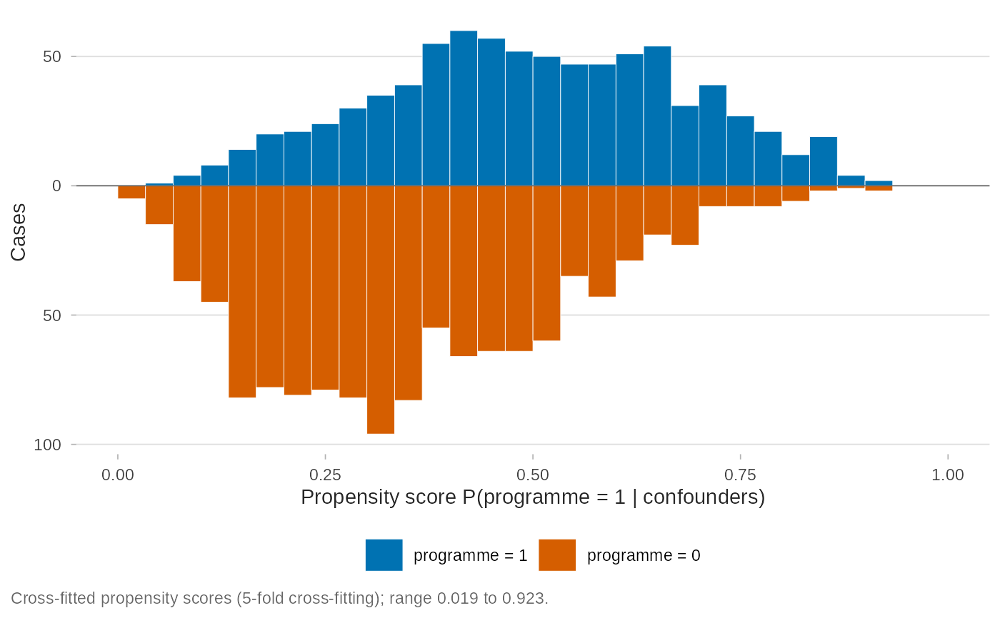
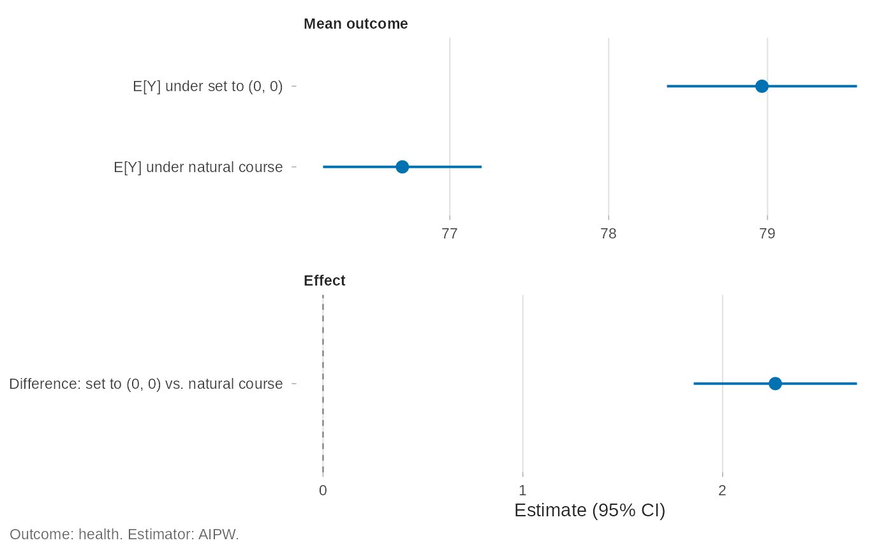
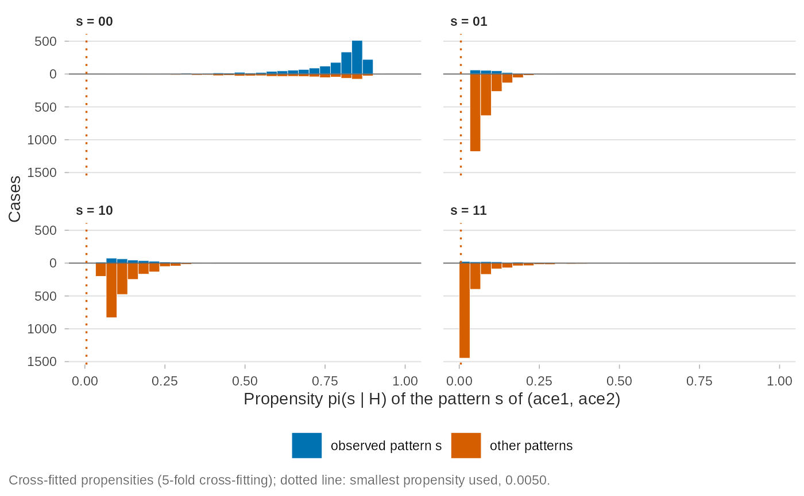

Plot causal-effect results
autoplot.lcc_result.Rdggplot2 figures of intervene_membership() and intervene_effect() results. plot() draws
the figure and returns it invisibly; causal_plot() puts several results side by side.
Usage
# S3 method for class 'lcc_result'
autoplot(
object,
type = c("effect", "probabilities", "overlap"),
level = 0.95,
se = c("robust", "fixed"),
labels = NULL,
bins = 30,
...
)
# S3 method for class 'lcc_result'
plot(x, ...)
# S3 method for class 'intervention_result'
autoplot(
object,
type = c("effect", "overlap", "weights"),
level = 0.95,
bins = 30,
patterns = NULL,
...
)
# S3 method for class 'intervention_result'
plot(x, ...)Arguments
- object, x
An
intervene_membership()orintervene_effect()result.- type
The figure; see Details.
- level
Confidence level of the intervals.
- se
intervene_membership()results:"robust"(default) or"fixed"standard errors, as intidy.lcc_result().- labels
intervene_membership()results: optional class labels, one per class.- bins
Number of histogram bins (
"overlap","weights").- ...
Ignored by
autoplot(); passed toautoplot()byplot().- patterns
intervene_effect()overlap: patterns to show (e.g."11"); default all patterns that receive probability under an intervention.
Value
autoplot(): a ggplot object, which can be modified with the usual ggplot2
syntax. plot(): the same object, invisibly.
Details
For intervene_membership() results, type:
"effect"(default): forest plot of the effects on class membership, \(\Delta_k = P(C(1) = k) - P(C(0) = k)\), with confidence intervals;"probabilities": bars of the class-membership probabilities under treatment, \(P(C(1) = k)\), and under control, \(P(C(0) = k)\), with confidence intervals;"overlap": mirrored histogram of the cross-fitted propensity scores \(P(A = 1 \mid X)\) of the treated (above the axis) and the untreated (below), after trimming; poor overlap shows as regions populated by one group only.
For intervene_effect() results, type:
"effect"(default): forest plot of the mean outcomes under the two interventions, \(E[Y^{g_1}]\) and \(E[Y^{g_0}]\), and of their difference \(\psi\), in two panels;"overlap": for every pattern \(s\) of the intervened exposures that receives probability under \(g_1\) or \(g_0\) (with one exposure, only \(s = 1\)), a mirrored histogram of the cross-fitted propensity \(\pi(s \mid H)\) among the cases observed with pattern \(s\) (above) and the others (below), with the smallest value used by the estimator (min_pi) marked; values near zero signal positivity problems;"weights": histograms of the inverse-probability weights \(g^*(A_S \mid H) / \pi(A_S \mid H)\) of the two interventions (log scale); the natural course, whose weights are all one, is left out.
The propensity scores are stored in the result ($propensity) when it is estimated;
results created by earlier versions of the package have none, and "overlap" and
"weights" then stop with a request to re-estimate.
Examples
# results hold plain values, so they can be plotted without Julia; here a
# two-class result in the layout intervene_membership() returns
r <- structure(list(estimator = "aipw", K = 2L, n = 1500L, psi1 = c(0.62, 0.38),
psi0 = c(0.45, 0.55), delta = c(0.17, -0.17), se = c(0.04, 0.04),
se_fixed = c(0.035, 0.035), se_psi1 = c(0.03, 0.03), se_psi0 = c(0.025, 0.025),
treatment = "a"), class = "lcc_result")
autoplot(r)

autoplot(r, type = "probabilities", labels = c("Low risk", "High risk"))

data(programme); data(ace_study)
# \donttest{
# effect of the school programme on the three wellbeing classes
m <- latentmixtures::lca(programme, low_mood:friends, K = 3)
#> Starting Julia ...
r <- intervene_membership(m, programme, treatment = programme,
confounders = c(female, age, low_ses, distress, belonging))
autoplot(r, labels = c("Flourishing", "Moderate", "Distressed"))

autoplot(r, type = "overlap") # propensity scores of participants and non-participants

# preventing abuse and neglect: counterfactual mean health
ie <- intervene_effect(ace_study, outcome = health, exposures = ace1:ace8,
intervene = c(ace1, ace2), confounders = c(age, female, parent_edu),
g1 = setto(c(0, 0)))
plot(ie)

autoplot(ie, type = "overlap")

# }